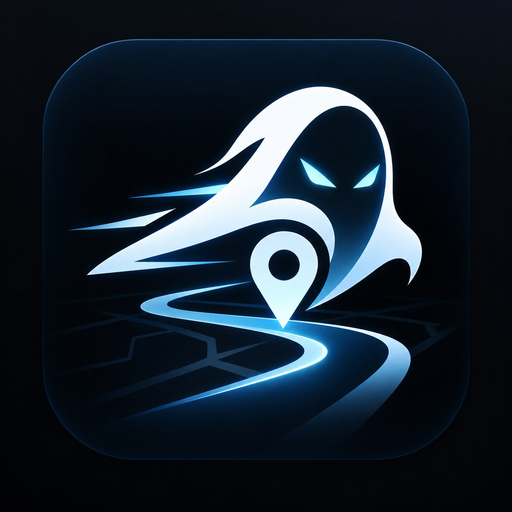

PRIVACY CENTER
隱私，不該藏在小字裡。
請選擇應用閱讀獨立、完整的隱私權政策。最後更新：2026 年 11 月 19 日。每份政策均說明實際處理的資料、權限、第三方服務以及你的管理與刪除選擇。
灰猫地图
位置、路線、百度地圖/導航 SDK 與車載顯示。
閱讀政策 →
GhostTrack
IP、使用者名稱公開查詢及離線號碼解析的資料邊界。
閱讀政策 →灰貓車管
本地車輛記錄、OBD、Google Drive 與 WebDAV 備份。
閱讀政策 →微信通知進化
通知監聽、選用加密歷史、BYOK AI 與 Android Auto。
閱讀政策 →你可以在應用程式內管理相關記錄，也可在 Android 系統設定中撤銷權限、清除應用程式資料或解除安裝應用程式。第三方服務處理的資料還需依其政策管理。